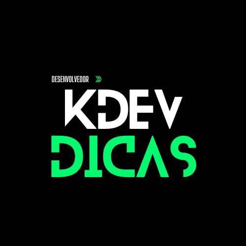

Levando mais conhecimento tecnológico para o futuro do mundo, nosso jovens.
A Kdev Dicas, acredita firmemente que a tecnologia é o futuro e que temos uma responsabilidade ética de compartilhar esse conhecimento com os jovens e adolescentes que estão prestes a ingressar no mercado de trabalho nos próximos anos. De acordo com a Associação Brasileira das Empresas de Tecnologia da Informação e Comunicação (Brasscom), o Brasil poderá enfrentar um déficit de até 264 mil desenvolvedores de software até 2025. Esse cenário desafiador é impulsionado pelo crescimento exponencial do setor de tecnologia, que demanda um número crescente de profissionais qualificados em diversas áreas da tecnologia da informação. Diante dessa realidade, sentimos a urgência de agir. Nosso compromisso é equipar a próxima geração com as habilidades necessárias para prosperar em um ambiente cada vez mais tecnológico, garantindo que eles não apenas compreendam a tecnologia, mas também possam inovar e liderar nesse campo.
 KDEV.DICAS Gustavo KarnoppAssim como muitos jovens que estudam em escolas públicas, venho de uma família humilde. Até os 18 anos, minha interação com a tecnologia era extremamente limitada. Na verdade, eu não tinha a mínima ideia de como funcionava o desenvolvimento de softwares e aplicativos, como Uber, Spotify, iFood, entre outros. Meu conhecimento era quase nulo, mas a tecnologia entrou em minha vida da mesma forma que muitos de nós começamos a interagir com ela: mediante uma conversa. Um amigo me explicou todo o processo de desenvolvimento de software, mencionando que isso poderia não apenas se tornar uma profissão, mas também oferecer excelente remuneração e até mesmo a possibilidade de trabalhar no exterior. E é exatamente isso que nos traz aqui hoje. Nosso objetivo é apresentar a alunos, mais especificamente os que estão indo para o ensino médio ou tão logo faculdade, os benefícios que a área de tecnologia oferece. Queremos esclarecer dúvidas, explorar curiosidades e prepará-los para um futuro que, cedo ou tarde, será dominado pela tecnologia.
KDEV.DICAS Gustavo Karnopp